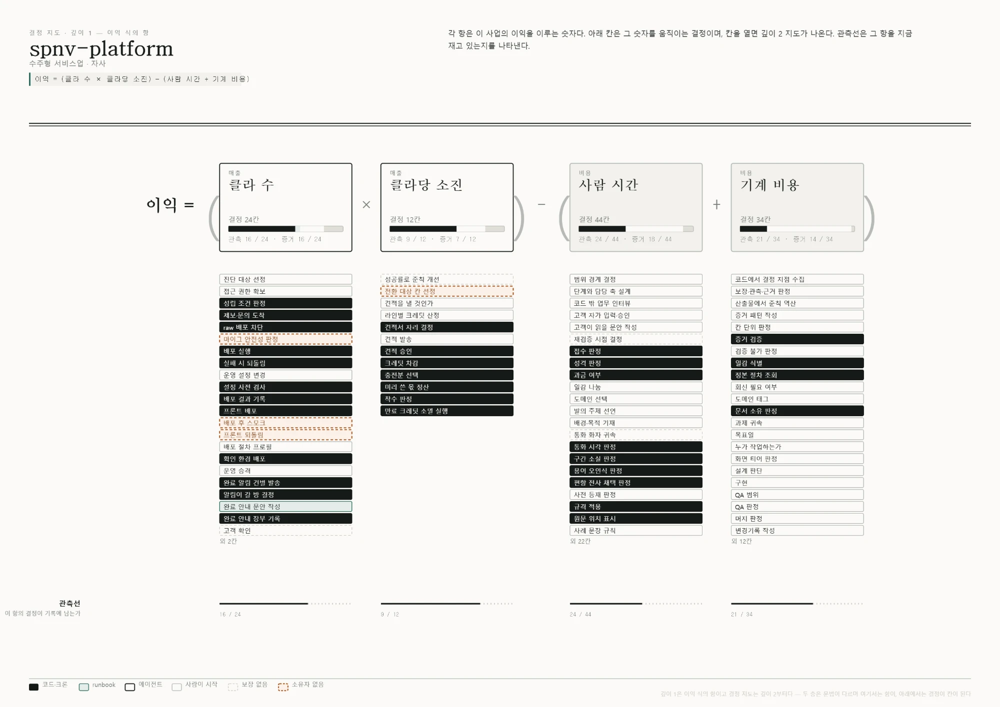

영업팀을 위한 AI 영업비서 · 12주 파일럿 제안
영업하시면서 가장 불편하거나 시간이 많이 드는 일은 무엇인가요?
어떻게 하면 영업 성과가 더 난다고 보시나요?
저희가 어떤 부분을 도와드리면 좋을까요?
저희가 정답을 정해 오지 않았습니다. 영업팀 의견을 귀담아 듣고 첫 기능을 정리하겠습니다.
대기업 그룹의 AX를 이끈 AI 엔지니어. 서비스를 MAU 100만·거래액 100억 규모로 키운 경험.
식품 데이터 플랫폼 '엄선' 창업, 엄마 회원 100만 명 규모로 사업화. 30억 원 이상 투자 유치.
대부분 회사의 현재 수준입니다
여전히 사람의 판단이 필요합니다
완전 AX, 사람은 예외와 책임 관리
이익을 만드는 항을 나누고, 항마다 숫자를 움직이는 결정을 찾습니다
그 결정을 지금 누가 내리는지 레인에 놓습니다 (사람 · AI · 코드)
AI에게 넘길 결정이 곧 AX 개발 범위가 됩니다

판단 기준을 벗어나면 AI가 멈추고 사람에게 넘깁니다
입력·근거·결과가 남아서 같은 판단을 다시 재현할 수 있습니다
반복되고, 근거가 분명하고, 복구하기 쉬운 결정부터 시작합니다
식단 짜기부터 주문 마감, 기사 배정, 고객 문의까지.
모든 결정을 사람이 엑셀과 전화로 처리했습니다.
이번 달 식단 구성, 식단표 게시, 상품 가격
사람이 결정정오 주문 마감, 발주 수량, 갱신 결제, 빈 구독 정리
사람이 결정기사 배정, 가방 회수, 배송지 정정
사람이 결정정기 안내 발송, 문의 답변, FAQ 관리
사람이 결정리뷰 확인과 대응, 광고 예산과 성과 측정
사람이 결정무엇을 바꿀지 정하고 요청하기
사람이 결정항마다 숫자를 움직이는 결정이 있습니다. 그 결정을 지금 누가 내리는지 지도에 놓으면, AI에게 넘길 곳이 눈에 보입니다.
출처: co·founder 도담 결정지도 (2026-10-01 조회) · 전체 55칸 중 대표 22칸 표시 · '전환 전'은 같은 칸을 사람 레인에 되돌려 놓은 재구성
① 사용
엑셀 수작업을 걷어내고, 주문·고객을 한 화면에서 봅니다.
② 변경
정오 마감, 갱신 결제, 기사 배정, 안내 발송을 코드와 크론이 처리합니다.
② 변경 + AI
운영정책과 주문 데이터를 읽고 AI가 답변 초안을 씁니다. 실무자가 검토해 보냅니다.
③ 결정 · AX
초안 검토·승인, FAQ 등록, 자동 발송 전환이 다음 후보입니다.
출처: co·founder 도담 결정지도 검증 (2026-10-01) · 매출 수치는 도담푸드 제공
검색이나 소개에 의존해서 늦게 알게 되고, 사람마다 아는 정보가 다릅니다
수고스러운 일누구에게 언제 연락했는지 기억에 의존합니다
잊기 쉬운 일상대 회사가 바뀔 때마다 "왜 로제AI인가"를 새로 씁니다
반복하는 일미팅 다녀와서 다시 앉아 정리하고 보고합니다
반복하는 일해야 했던 일이 퇴근하고 나서야 생각납니다
잊기 쉬운 일영업 본업은 아닌데 시간이 드는 일이 어디인지부터 함께 찾겠습니다
※ co·founder 가설 · 영업팀 확인 전설비를 새로 들일 가능성이 높은 현장을 먼저 골라냅니다
보는 정보 · 인허가 · 착공 · 증축 소식상대 회사 사정에 맞춘 제안 스토리 초안을 씁니다
보는 정보 · 업종 · 시설 · 로제AI 사례미팅 내용을 정리하고 다음 연락 시점을 알려줍니다
보는 정보 · 음성 메모 · 연락 이력아래는 예시이며, 최종 3가지는 영업팀과 함께 정합니다
가능성이 낮은 곳에 반복해서 연락하는 시간을 줄입니다
| 현장 | 용도 | 규모 | 단계 | 착공 예정 | 가능성 |
|---|---|---|---|---|---|
| OO동 물류센터 신축 | 창고시설 | 4.2만㎡ | 건축 허가 | 11월 | ●●● |
| OO시 지식산업센터 | 업무시설 | 2.8만㎡ | 건축 허가 | 12월 | ●●● |
| OO 요양병원 증축 | 의료시설 | 0.9만㎡ | 착공 신고 | 진행 중 | ●●○ |
| OO지구 공동주택 | 아파트 | 11.5만㎡ | 착공 신고 | 진행 중 | ●●○ |
우선순위 이유 · OO동 물류센터: 신축 창고라 기존 유선 설비가 없고, 착공 전이라 설계 단계에서 제안할 수 있습니다.
※ 예시는 가상 데이터 · 공공 인허가 정보는 허가·착공 일정과 규모를 제공하며, 설계사·시공사 정보는 포함되지 않음
내년 물류동 증축 계획이 발표되어 설비를 새로 들이는 시기입니다
대형 창고는 화재 한 번으로 영업이 중단될 수 있습니다
불이 난 뒤에 알리지 않고 발생 가능성을 먼저 알려줍니다
식품 공장 설치·운영 사례 (레퍼런스 확인 후 기입)
영업사원이 한 일은 음성 메모 하나
OO건설 김 부장, 11월 설계 확정 예정, 샘플 견적 요청
샘플 견적 초안 목요일까지. 초안은 AI가 먼저 준비합니다
11월 6일 오전 재연락 알림. 반응이 좋은 거래처부터 먼저 챙기도록 순서를 정해드립니다
적은 연락으로 더 많은 미팅을 만드는 것이 목표입니다
실제 영업 흐름과 쓰는 도구, 노하우를 듣습니다
로제AI 영업팀 AX 시스템 로드맵을 설계합니다
인허가 레이더 리스트업 · 세일즈 스토리 초안 제공 · 영업일지 등록·정리·알림
무엇을 많이 썼는지, 시간을 얼마나 줄였는지, 성과가 늘었는지
영업은 회사의 모든 업무가 시작되는 곳입니다. 영업에서 쌓인 현장·고객·제안 기록이 있어야 마케팅, 설치, 유지보수, 경영 판단까지 데이터로 이어집니다.
영업팀 업무를 지도로 그리고, 그중 시간이 가장 많이 드는 3곳을 먼저 AI에게 맡깁니다.
파란 칸부터 시작해 점선을 따라 넓혀 갑니다 · 목표는 로제AI 전체가 같은 인원으로 더 크게 움직이는 것
세 가지 질문, 영업팀 말씀을 듣겠습니다
여기 적은 답으로 AI 영업비서의 첫 기능을 정합니다.
지금 이 자리에서
실제 영업 흐름과 도구, 노하우
AX 구조 설계와 함께
hello@supernova.kr